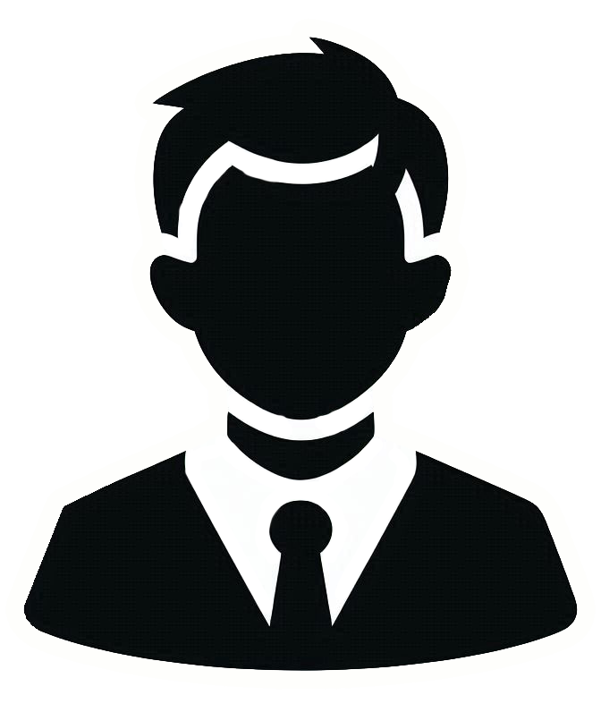
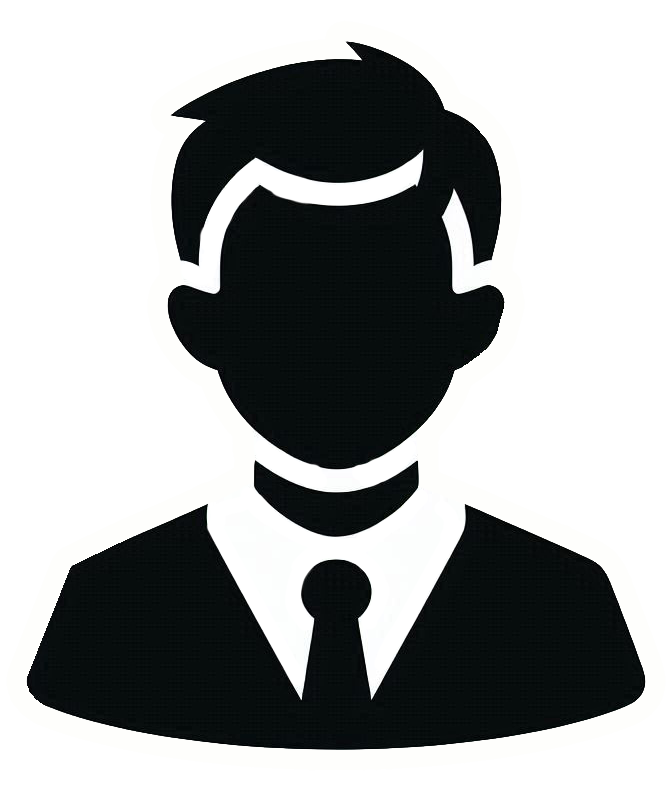

Adan Gonzalez


 


- Soy un estudiante de la UABC, actualmente estoy cursando una carrera de ingeniería
en software y tecnologías emergentes.
- Soy originario de México desde el 18 de octubre de 2004.
- Me encanta participar en proyectos donde se requiera
creatividad.
- Tengo 3 años de experiencia editando videos para streamers usando Premiere, Photoshop y Filmora.

Como profesional aún no tengo claro en que quiero me quiero especializar, por ahora estoy probando un poco de todo para ver que me gusta, en general me gusta de todo, tengo que admitir que hacer este portafolio me a gustado desarrollarlo la verdad, y me gustaria aprender más sobre backend y fronted

Durante 3 años he estado editando videos para varios streamers, ya sean videos de Youtube, TikToks o Reals, e editado directos de 10 horas, highlights, eventos, e incluso para mi universidad edite una parte de los videos que presentan las materias